Katalog
782 Dialfaces, je eine Objektseite
Das Repositorium ist der Objektkatalog: Fotografien, 3D-Modelle, Aufbewahrungsort, Inventarnummer und, wo vermessen, Güte und bestimmte Breite. Von 694 Objekten tragen 113 eine Güte.
Digitale Edition · Zugang
Eine Kegelsonnenuhr macht den Lauf der Sonne zu einem Schatten auf Stein. Das Berliner Register führt 782 Dialface-Einträge antiker Sonnenuhren; 113 Objekte sind am 3D-Modell vermessen und bewertet, und bei 72 von ihnen lässt sich die geographische Breite, für die die Uhr entworfen wurde, aus den gravierten Linien ablesen. Die Abbildung zeigt wie: Uhr, Tag und Stunde wählen und den Schatten des Nodus auf dem Stundennetz wandern sehen.
Die 3D-Modelle gehören zur Edition Topoi der Berlin Sundial Collaboration; die Lizenz steht je Objekt im Katalog. Die Rechte an den Digitalisaten der Literatur sind nicht geklärt; diese Seite zeigt nur Ausschnitte.
Katalog
Das Repositorium ist der Objektkatalog: Fotografien, 3D-Modelle, Aufbewahrungsort, Inventarnummer und, wo vermessen, Güte und bestimmte Breite. Von 694 Objekten tragen 113 eine Güte.
Erzählung
Vier kurze Kapitel: welche Fläche der Stein hat, wie sich 694 Objekte auf 72 Breiten verengen, wie eine Uhr, ObjID 126 aus Delos, aus mehreren unabhängigen Konstruktionszeugen gelesen wird und was die Breiten im Mittelmeerraum zeigen.
Sammlung
Die PDAI-Sammlung enthält 7 Werke mit 1.066 Seiten, darunter die beiden Bände von Karlheinz Schaldach zu den antiken Sonnenuhren Griechenlands und eine Sammlung von Sonnenuhr-Stichen des 16. Jahrhunderts.
Werkzeuge
Eine interaktive Animation zeigt den Schatten an einer Kegelsonnenuhr dreidimensional. Ein zweiter Betrachter öffnet die 3D-Modelle der Objekte.
Erläuterung des methodischen Ansatzes
Jede Zahl auf dieser Seite wird beim Bauen aus dem Register, aus der PDAI-Sammlung oder aus den Aufsätzen gelesen. Fehlt eine Quelle, bricht der Bau ab.
Das Register beurteilt nur, was gemessen ist. Ein Fragment wird nicht abgewertet, weil Teile fehlen; die Güte sinkt nur bei Mängeln der Messung selbst. Die Seite übernimmt diese Regel.
403 Dialface-Einträge tragen eine Ortskoordinate, 379 nicht. Die Farbe gibt den Flächentyp laut Katalog an.
Sechs Objekte mit Messdatensatz. Jede Karte führt zur Objektseite im Repositorium, mit Fotografien, 3D-Modell und Messwerten.
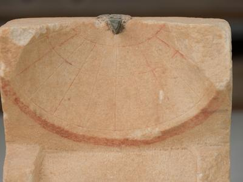
ObjID 126 · Delos, Inv. Nr. B3652 (11023)Archaeological Museum of DelosKegelAnpassung Kegel: entscheidendGüte Aφ 37,97°Objektseite öffnen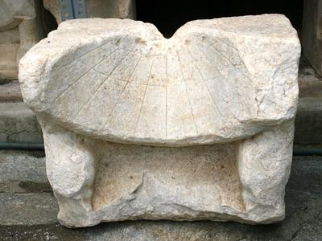
ObjID 128 · Delos, Inv. Nr. A7812Archaeological Museum of DelosKegelAnpassung Kegel: entscheidendGüte Aφ 43,61°Objektseite öffnen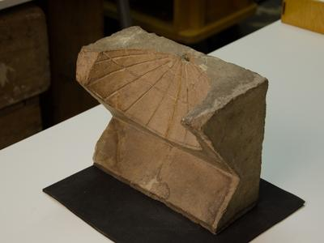
ObjID 18 · London, Inv. Nr. 2547 Reg. no. 1893,0713.13British MuseumKugelAnpassung Kegel: nicht entscheidendGüte Bφ 41,45° vorläufigObjektseite öffnen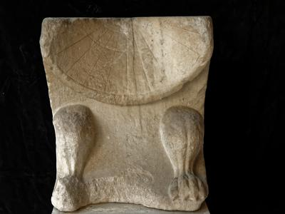
ObjID 117 · Athens, Inv. Nr. 3156National Archaeological Museum of AthensKegelAnpassung Kegel: entscheidendGüte Bφ 34,48°Objektseite öffnen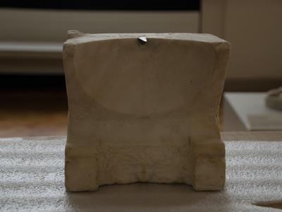
ObjID 108 · Berlin, Inv. Nr. 1048Staatliche Museen zu BerlinKegelAnpassung Kegel: entscheidendGüte Bφ 33,31°Objektseite öffnen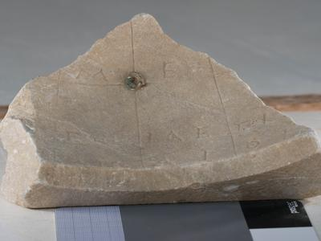
ObjID 2 · Delos, Inv. Nr. 133Archaeological Museum of DelosKugelAnpassung Kugel: entscheidendGüte AObjektseite öffnenFür jede der 72 Uhren mit bestimmter Breite berechnet das Register die Mittagshöhe der Sonne, die Tageslänge und die Länge einer Temporalstunde an den Sonnenwenden und zur Tagundnachtgleiche, mit der Schiefe der Ekliptik des Jahres −100 (23,71°). Die Größe ist wählbar; jeder Punkt ist ein Objekt, die Linien sind die geometrischen Kurven zum Vergleich. Ein Klick öffnet die Objektseite.
Die Breite ist die Breite, für die die Uhr entworfen wurde, nicht die ihres Fundorts. Eine Uhr kann für ein anderes Klima gemacht sein als das, in dem sie gefunden wurde. ObjID 128 ist ein Fund von Delos, doch das Register ordnet ihre Breite von 43,61° dem Klima von Massalia zu.
Ein Fragment einer Kegeluhr ohne und mit erkannten Linien, die Zeugen der Breite der Uhr von Delos und Seiten aus der Literatur.
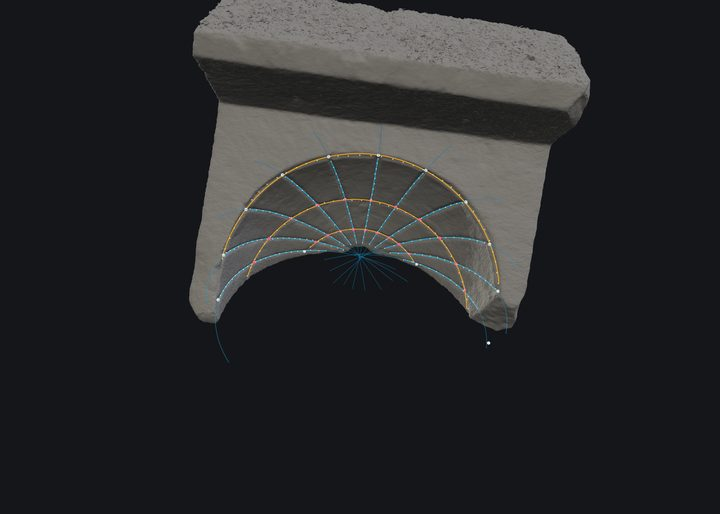
ObjID 18, erkannte LinienDasselbe Modell mit den erkannten Linien; aus ihnen entstehen die Messwerte.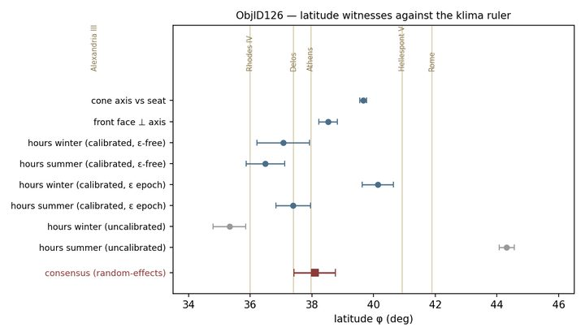
ObjID 126, Zeugen der BreiteSchätzwerte der Breite aus den einzelnen Konstruktionswegen im Vergleich mit den Klimata; unten der Konsens.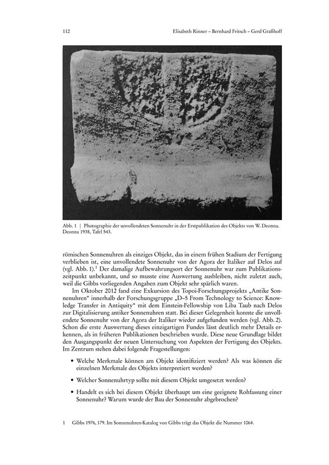
Delos, Seite 112Die unvollendete Sonnenuhr der Agora der Italiker. Aufnahme aus der Erstveröffentlichung von W. Deonna 1938, in Rinner, Fritsch und Graßhoff, eTopoi 2 (2012/2013).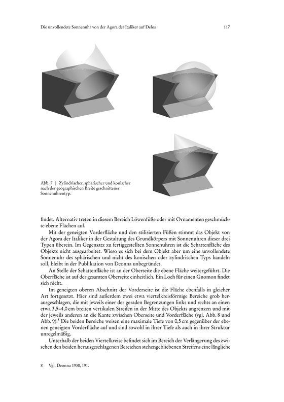
Delos, Seite 117Zylindrischer, sphärischer und konischer Sonnenuhrtyp, nach der geographischen Breite geschnitten.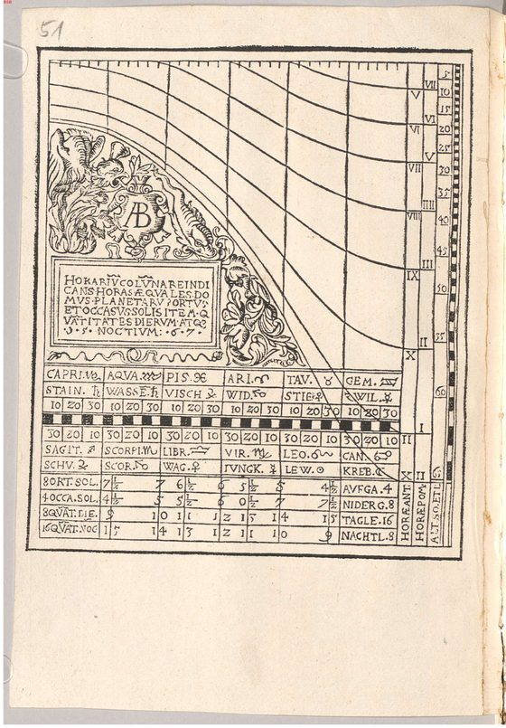
Hartmann, Digitalisat Seite 100Stich einer Sonnenuhr mit lateinischer Überschrift und einer Tafel nach Monaten, aus der Stichsammlung von Georg Hartmann (16. Jahrhundert).Sieben Aufsätze sind die Ergänzungen S1 bis S7 des Repositoriums. Sie tragen die Herleitungen hinter den Abbildungen dieser Seite: Konstruktionsgeometrie, Merkmalserkennung, Modellanpassung, zwei Einzelvermessungen und die Methode. Jeder Eintrag nennt, welche Aussage er stützt. Alle sind Entwürfe in Alpha-Fassung und unveröffentlicht.
Titel und Zusammenfassungen stehen im englischen Original der Aufsätze.
A Research Programme in Construction Geometry, Measurement, and Literate Coding
Stützt: das Programm hinter dem Messfeld und dem astronomischen Bild · 7 Seiten
The research task is to recover, from photogrammetric models of ancient conic sundials, the construction proportions in which the instruments were designed. This paper states the programme, reviews the June 2026 drafts on the research volume, and records the governing correction: the three seasonal meridian marks determine the cone and do not determine the latitude.
An Analytical Framework for Shadow Projection and Apex-Free Parameter Recovery on an Inclined Cone
Stützt: die Schattenanimation und das astronomische Bild · 15 Seiten
A conic sundial with its nodus on the polar axis is determined by three construction choices: the klima, the opening of the cone, and a scale. The three seasonal meridian marks determine the cone independently of latitude. Latitude is recovered from the hour division of the solstitial circles or from the dressed planes. A closed-form marking ratio Q recovers the half-angle without the apex being identified.
From Groove Morphology to Geometric Primitives via Cross-Sectional Profile Analysis
Stützt: die erkannten Stunden- und Tageslinien auf den Objektseiten · 5 Seiten
A three-level hierarchical framework for automated feature perception on stone dialfaces: physical groove cut, medial centreline coordinate across sliced cross-sectional profiles, and geometric primitive fitting. Evaluated on ObjID 18 (BM inv. 2547) and ObjID 126 (Delos).
Nonlinear Parameter Estimation for Conic Sundial Reconstruction from 3D Scan Data
Stützt: Kegelanpassung und Breitenschätzung des Messfelds · 5 Seiten
Nonlinear parameter estimation methods for recovering the 7-parameter cone model from 3D scan data following Bard's estimation framework. Compares Nelder-Mead, TRF, and L-BFGS-B, resolving partial-arc degeneracy via coaxial constrained estimation.
Construction Witnesses, Consensus Estimation, and the Proportions of Dialface ObjID 18 (British Museum inv. 2547)
Stützt: Einzelvermessung, Objektseite ObjID 18 · 10 Seiten
Empirical deduction of construction proportions from the 3D surface model of Dialface ObjID 18 (BM inv. 2547). Evaluates four independent construction witnesses, calibrating the engraved angular unit and establishing the consensus latitude phi = 41.45 deg (Rome/Hellespont klima) with workshop rule x = 1:4 (12:15:20).
A Geometrically Explicit Estimation with Stated Assumptions and Defendable Confidence Intervals
Stützt: Einzelvermessung, Objektseite ObjID 126 · 6 Seiten
Analysis of the 3D model of Dialface ObjID 126 from the Archaeological Museum of Delos. Isolates a +5.27% angular unit distortion via the equinoctial invariant HE = 90 deg, recovering the intended design latitude phi = 38.01 deg (Delos/Athens klima).
Complexity Reduction through Structured Context, Executable Specification, and Closed-Loop Refinement
Stützt: wie die Messkette gebaut und geprüft wurde · 5 Seiten
A research methodology unifying Knuth's literate programming with autonomous AI agent capabilities. Employs a 3-level operational model (living reference background, structured planning substrate, agentic action) in a closed feedback loop on 3D sundial reconstruction.
Werke der PDAI-Sammlung sundial, mit den Seitenzahlen des Digitalisats.
| Kürzel | Titel | Jahr | Seiten |
|---|---|---|---|
| Graßhoff u. a. 2015 | The construction principles of ancient Greek sundials | 2015 | 8 |
| Rinner u. a. 2013 | Die unvollendete Sonnenuhr von der Agora der Italiker auf Delos | 2013 | 22 |
| Rinner 2017 | Ancient Greek Sundials and the Theory of Conic Sections Reconsidered | 2017 | 18 |
| Schaldach 2012 | Eine Sonnenuhr und ihr Postament: zwei Funde vom römischen Heiligtum auf dem Martberg (Lkr. Cochem-Zell) | 16 | |
| Schaldach 2021 | Die antiken Sonnenuhren Griechenlands, Band 1: Die Funde in historischer Sicht (BSAW 76/1) | 2021 | 297 |
| Schaldach 2022 | Die antiken Sonnenuhren Griechenlands, Band 2: Kataloge, Analysen, Texte (BSAW 76/2) | 2022 | 380 |
| Hartmann, 16. Jh. | Collectio figurarum: Kupferstiche und Holzschnitte von Sonnenuhren (Georg Hartmann) | 325 |
Was diese Seite zeigt, stammt aus den folgenden Quellen.
Der Katalog mit 782 Dialface-Einträgen samt Metadaten und der Messexport mit Güte, Flächenanpassung, Breite und Kegelwinkel je Objekt.
Eine DuckDB-Datei mit Objekten, Merkmalen, Schnittpunkten, Messgrößen und Prüfergebnissen; sie wird schreibgeschützt gelesen. Das astronomische Bild wird daraus berechnet.
Aufsätze, zwei Bände von Karlheinz Schaldach und eine Stichsammlung des 16. Jahrhunderts.
Ergänzungen S1 bis S7, gesetzt als PDF.